收录于合集

作品简介
【作者】 郑在浩（Jae Ho Chung），韩国首尔国立大学社会科学学院国际关系系教授。
【 编译】 姚寰宇（国政学人编译员，山东大学东北亚学院）
【校对】 刘金晶
【审核 】 李博轩
【排版】 王国伟
【 来源 】
Chung, J. H. (2019). How America and China see each other: charting national views and official perceptions. The Pacific Review, 32 (2), 188-209.
期刊介绍
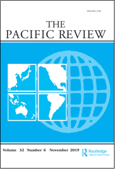
The Pacific Review《太平洋评论》是太平洋地区研究的主要平台，作为跨学科期刊，其宗旨和目标为打破研究领域之间以及学术界、新闻界、政府和商界之间的障碍，重点关注政策问题。2018年该刊的影响因子为1.865，在区域研究类SSCI期刊中排名9/47，在国际关系类SSCI期刊中排名第22/91。
对中美两国相互认知的分析——基于对国民和官方知觉的跟踪
How America and China see each other:
charting national views and official perceptions
。 译 者 按
党的十八大以来，以习近平同志为核心的党中央高度重视对美外交工作，创造性地提出“中美新型大国关系”的战略目标，赋予其“不冲突、不对抗，相互尊重，合作共赢”的核心内涵，以引领新时代中美关系的建设和发展。 **2016 年6月6日，习近平主席在《为构建中美新型大国关系而不懈努力——在第八轮中美战略与经济对话和第七轮中美人文交流高层磋商联合开幕式上的讲话》中指出：“我们要增强两国互信。中国人历来讲究‘信’。2000多年前，孔子就说：‘人而无信，不知其可也。’信任是人与人关系的基础、国与国交往的前提。我们要防止浮云遮眼，避免战略误判，就要通过经常性沟通，积累战略互信。这个问题解决好了，中美合作基础就会更加坚实，动力就会更加强劲。”**习近平主席高瞻远瞩指出了中美关系健康良性发展的关键在于增强互信。互信是建立在两国对彼此的知觉之上的，增强互信就要做到知己知彼，了解双方对彼此的真实想法。客观对待和分析本文所指出的双方对彼此的知觉，增强沟通，才能帮助中美两国避免战略误判、积累战略互信，才能真正构建符合中美两国人民利益的中美新型大国关系。
内容提要
基于“知觉（perception）既可以成为大国竞争的催化剂又可以成为大国竞争的制约枷锁”这一观点，本文检视了冷战之后中美两国之间的国民知觉（national perception，即两国公民是如何看待对方的）和官方观点（official views，即两国政府是如何看待彼此的）。国民知觉主要呈现以下三个特点：（1）美国人对中国的知觉普遍比中国人对美国的知觉要更负面；（2）两个大国在核心价值观和准则（norm）上鲜有一致；（3）知觉(perceptions)往往比现实更超前（realities）。就官方知觉而言，正式的文书并不能完全揭示出他们真实的思想状态。外交礼仪（diplomatic courtesy）和战略自尊（strategic self- esteem）始终贯穿其中。然而，美国的战略焦虑和以实力制约中国的意图也日益显著。另一方面，从中国的文件来看，中国的自卑感（inferiority）正逐渐消失。总言而之，两国之间的知觉对双方的关系影响巨大。
本文对国民知觉的研究分析是基于众多全球知名的民意调查机构所做的系列调查，这些机构包括芝加哥全球事务委员会（Chicago Council
）、皮尤全球调查（the Pew Global Research）、哈里斯互动调查公司（Harris Interactive）、盖洛普民意测验（Gallup Polls）以及环球时报（Global Times）。
由于无法对决策者进行系统调查和访谈，本文对国家知觉的分析主要是基于三套具有代表性的政府文件：通过《国家安全战略报告》（the National Security Strategy，NSS，1994年起由白宫根据《戈德华特－尼科尔斯国防部重构法案》制作提交美国国会，总共12套）和《四年防务评估报告》（Quadrennial Defense Review，QDR，侧重军事方面，1997年起由美国国防部发布，到2017年为止共有五套）分析美国政府对中国的看法。通过1998年至2010年的《中国的国防》（1998年由国务院发行，目前总共十套）、2013年中国《国防白皮书》、2015年《中国的军事战略》和2017年的《中国的亚太安全合作政策》分析中国政府对美国的看法。
文章导读
在影响21世纪国际安全的因素中，最重要的变量莫过于中国崛起成为一个与美国相当的大国。
中国的崛起是一个不争的事实，但是与此同时人们对中国的知觉（perception）却在某种程度上远超出了中国的实际能力——也就是说，虽然中国的实际实力
相比美国仍有一定差距 ，但世界各地的人们已经开始在谈论中美之间发生权力转移甚至 激烈竞争 的可能性。
这种知觉的产生一方面可能是受到历史的影响（即古代中华帝国的存在），另一方面可能是由于美国的衰落给人带来的真切感受。而有关中国崛起是否能主导全球霸权的根本性转变的话题也引起了学者们的激烈辩论。作者认为，从历史来看，并不能对上述的争论过早得下结论：美国的GDP在1872年超过英国，但这两个大国真正进行权力转移则是发生在72年之后——即直到1944年布雷顿森林体系建立后，美国才最终支撑起其霸权。
而中国名义GDP到 2018年仍未超越美国，因此就中国崛起而言，人们的知觉的确远超现实。
本文立足于上述知觉与权力转移的关系问题并指出权力对等（power parity）和日益增长的不满感是影响大国竞争关键条件（crucial
conditions），但是与此同时，本文也强调相互知觉是影响大国竞争的重要附加条件（additional
condition，催化或约束大国竞争）。本研究聚焦于中美两国对彼此的看法，并指出国家间的知觉变幻莫测并处在持续变动之中。同时本文也认为，尽管知觉往往会影响决策过程（特别是在公共舆论发挥重要作用的民主社会），但它并不一定导致关键政策的改变。通过详细分析中美两国的相互知觉的变化轨迹，我们或许能够了解中美关系动态演变的逻辑。本文对国民知觉和官方知觉的研究是建立在以下前提之上的：
即包括中美两国在内，议程设置和外交政策制定在一定程度上都受到以大众知觉和问题认知为基础的公共舆论的影响。
然而政治精英和政策制定者时常在某些外交问题上无法与公共舆论保持一致，这种不协调有时也会在外交政策的制定中引发争论和紧张，中美关系也不例外
一、 冷战后中美两国国民知觉的趋势 ****
公众知觉变化无常，但从中可以窥得相互竞争的两个国家的人民看待彼此的重要趋势。 本节所讨论的后冷战时期中美两国国民知觉主要包括三个方面：（ 1）对彼此持积极/消极态度的程度；（2）在核心价值观和准则上的一致程度；（3）对未来国家实力、权力转移和中美关系的展望。 1.对彼此持积极 /消极态度的变化趋势皮尤全球调查（the Pew Global Research）和盖洛普民意测验（Gallup Polls）对探究中美两国对彼此态度的作用十分显著。图一来自盖洛浦民意调查，展示出从1985年到2017年美国民众对中国的知觉变化。其中有两个较为明显的趋势：一个是80年代末成为美国民众对中国知觉的一个分水岭；另一个是从那时起，对中国持有消极印象的美国人一直都多于对中国持有积极印象的美国人。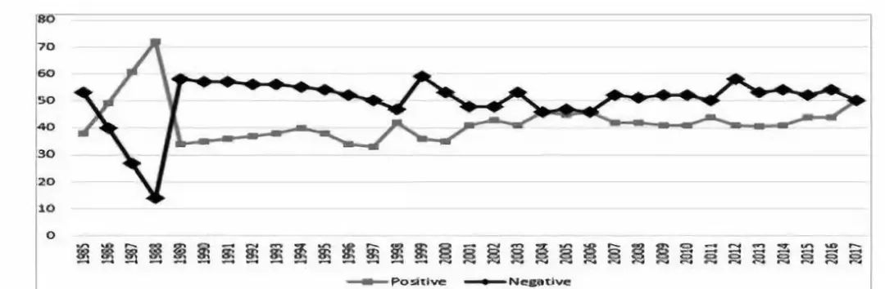 图一：美国人对中国的知觉（时间：1985-2017，单位：%，来源：Gallup polls ） 图二来源于美国皮尤全球民意调查(Pew Global Attitudes Survey)的数据，该数据与上一组数据略有不同，在2009年到2011年美国人对中国的积极印象要高于消极印象。 **但是图一和图二两组数据都展现出相同的趋势，即2013年至 2016年期间美国民众对中国的消极印象高于积极印象。这可能是由于美国民众越来越关注中国近年来快速增长的实力。**中国对美国的看法(见图三)波动则更频繁。2005年至2010年的中国民众对美国持积极态度的平均比例为44.8%，而2011年至2016年持积极态度的平均比例为45.2%；同时段他们对美国持消极态度的平均比例别为47.3和47.2%，略高于对美国的积极态度。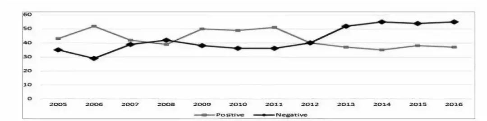 图二：美国人对中国的知觉（时间：2005年至2006年，单位：%，来源：Pew Global Attitudes Survey ）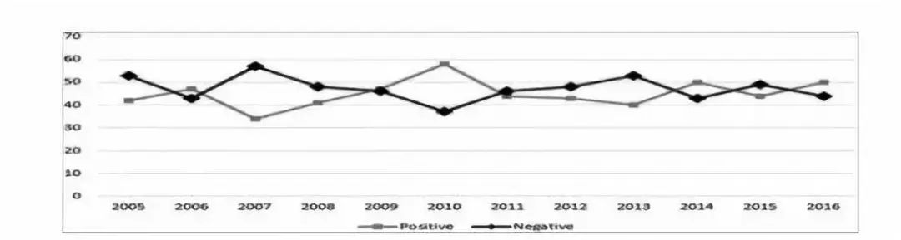 图三：中国人对美国的知觉（时间：2005年至2006年，单位：%，来源：Pew Global Attitudes Survey ）仅通过这些问卷和民调很难对这些波动的趋势进行解释，但是通过对图四进行分析可以得出两种可能的猜测： 一方面，美国民众正逐渐意识到中国与美国国力的差距正迅速缩小，由此带来的担忧和不安从这些调查中可见一斑；另一方面，自2013年以来，国际社会普遍认为中国正越来越自信，而美国人也越来越担忧中国崛起所带来的战略影响 。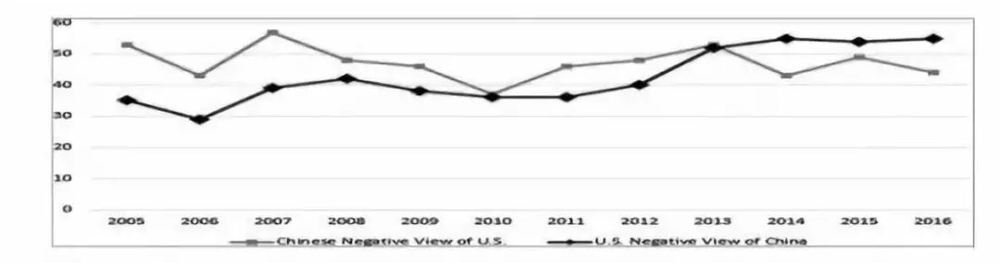 图四：中美两国对对方消极认知对比（单位：%，来源：Pew Global Attitudes Survey ） 2.对两国民众在核心价值观和准则（ norms）的评估超越对彼此正面/负面和友好/敌意的观点，作者对两国民众对彼此核心价值观和准则的看法进行了分析。这与两国的软实力（一种通过自身的吸引、准则让他人自愿服从的能力）相关，而软实力将成为两国未来在军事和经济领域之外竞争的核心。本文拟选取四项案例，分别是：中国民众对美国干预阿富汗的看法（由美国皮尤全球研究中心整理汇编）、美国民众对中国贸易实践的看法（由芝加哥全球事务委员会汇编）、美国民众对中国承担国际责任的知觉（由美国对华态度调查AACS汇编）以及美国民众对西藏问题的看法（由哈里斯互动调查公司汇编）。如图五所示， 中国民众对美国和北约军事干预阿富汗的看法主要是负面的。 即，在2007年到2011年间，持负面看法的人数平均占比高达67.7%，而正面看法的占比仅为11.2%。中国官方媒体《环球时报》的调查也印证了皮尤全球研究中心的发现。在有关“你如何看待美国自2001年以来进行的13年反恐战争”这一问题中，96%的受访者（6581人）表示“不太理想”；在有关“你支持美国在叙利亚境内轰炸ISIS吗”这一问题中，79%的受访者（8905人）表示反对（《环球时报》，2014年9月11日、24日）。图五：中国对美国入侵阿富汗的知觉（时间：2007-2011，单位：%，来源：Pew Global Attitudes Survey）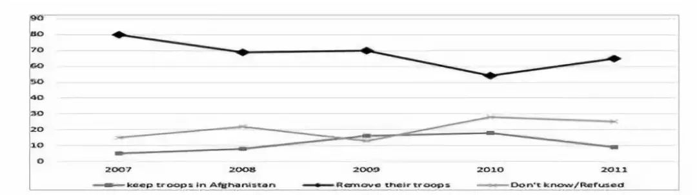 图六总结了从2002年到2018年美国民众对中国贸易实践的看法。与苏联不同，中国始终是自由贸易体制最大的受益者之一。因此美国民众如何看待中国的贸易行为可能成为两国争论的一个重要来源。认为中国是公平贸易伙伴的美国人平均占比为30.5%，而认为中国是不公平贸易伙伴的人数平均占比为59.8%（其余回答为“没有答案”或“不知道”）。有趣的是，中国民众也不一定认为美国是公平的贸易伙伴。在问题“美国在对待与中国的争端时是否采取贸易保护主义的立场”中，98%的中国受访者（21592人）的回答是“是”（《环球时报》，2012年10月9日、24日） 图六：美国对中国贸易实践的知觉（时间：2002-2015，单位：%）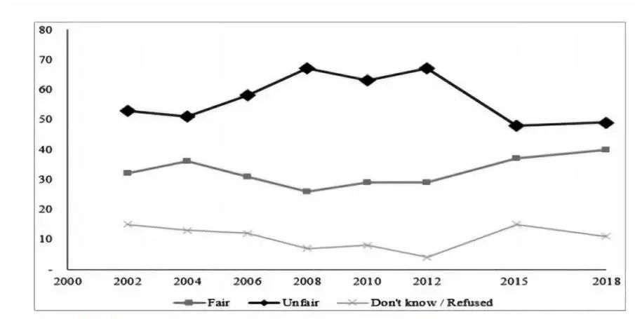
上述调查结果都清楚地表明，美国民众的典型认知（normative ****opinion）与中国的核心利益并不一致。
3.对未来的预期
哈里斯民调在2011年针对中美两国民众就“你认为哪个国家现在、2020年和2050年会成为世界上的超级大国”这一问题进行调查。结果如表一所示，选择美国在2011年和2020年依旧是世界超级大国的人的美国人比例分别为77%和47%，而选择美国在2050仍是超级大国的美国人的比例则下降到了41%。同时，选择中国在2011年和2020年成为世界超级大国的美国人的比例分别为14%和35%，选择中国在2050年成为超级大国的美国人比例为32%。而相比之下中国民众选择中国的比例则较高，三个时间点分别为4%、32%和53%。这项结果与中国国内2014年的一份调查结果基本一致：在有关“你是否同意奥巴马总统所说的美国将在未来100年继续保持世界领导者的地位”这一问题的回答中，高达92%的中国受访者（18084人）持否定观点。2012年年中进行的一项调查表明，只有18%的中国受访者表示希望中国独揽世界霸权，而57%的受访者则希望中国与美国一同领导世界。表一：中美两国民众对未来的预期（时间：2011-03-03，来源：The
Harris Poll）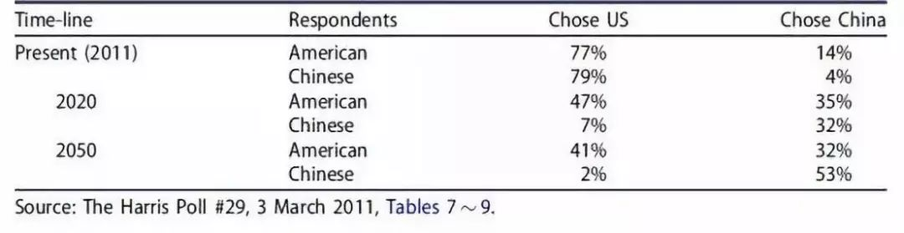
表二展示出中美两国民众对中美两国权力过渡前景的预期。
结果显示，越来越多的美国人认为中国可能超过美国
，六年间的平均人数占比为33.7%；而这一数字远低于中国55.4%的平均水平。此外，认为中国不太可能超越美国的美国民众人数在下降，六年平均人数占比为49.3%，相比之下中国的平均占比为18.2%。有趣的是
，平均 有9.2%的美国受访者认为中国已经超越了美国——这是另一个知觉远超现实的迹象 。
表二：中美两国人民对未来的预期（时间：2008-2015，其中A代表美国民众知觉，C代表中国民众知觉，来源：Pew Global Attitudes Survey） 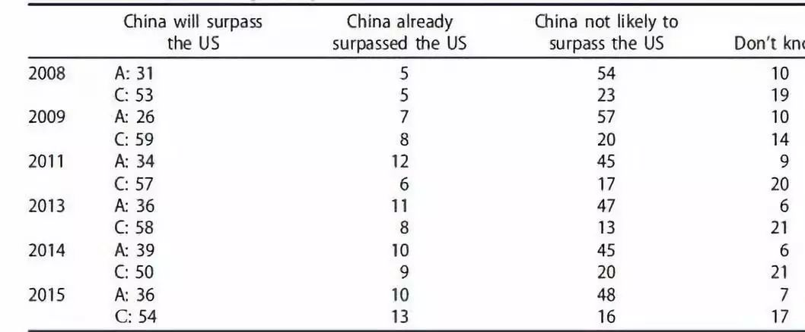 芝加哥全球事务委员会进行的一系列调查显示， 美国民众对中国的迅速崛起感到忧虑。 根据调查结果，在2006年、2008年、2010年和2012年，对中国经济增长与美国相当持积极态度的人占比分别仅为9%、6%、8%和9%，而持消极态度的人数占比分别为33%、42%、38%和40%。这在一定程度上与2011年哈里斯民调的调查结果一致，当时美国民众对中国经济增长的正面看法和负面看法分别为22%和39%。如表三所示，美国人对中国军事崛起的看法要更加消极。八年间对此持积极态度的人平均占比仅为12.3%，而持消极观点的高达80.1%。根据权力转移理论，军事能力建设会在很大程度上影响对国家能力和威胁的知觉。 崛起国的军事建设表现其不满情绪并释放出了敌对信号，加强主导国的恐惧。 根据盖洛普民调，2001年中国是美国第二号敌人，但此后的十年中大部分时间中国都位于伊拉克、朝鲜、伊朗等国家之后，直到2011年中国才又重新成为美国的第二大敌人。而到了2014年中国到了第一位。但是在2015年至2017年，俄罗斯和朝鲜成为美国的头号强敌，并将中国后调至第三或第四位。表三：美国民众对中国军事崛起的知觉（时间：2005-2016，来源：Pew Research Global Attitudes Project)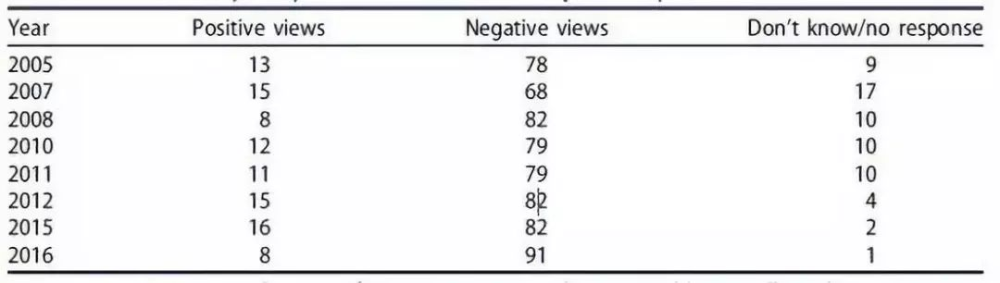 中国方面目前并没有进行类似的调查或者报告，但中国民众对中美关系的评估在一定程度上可以体现出他们的观点。一项有趣的研究考察了中国媒体对美国的看法。该研究考察了2000年至2010年间中国官方媒体《人民日报》刊发的文章，其中中国人对美国的消极印象主要体现在以下几个方面：政治意识形态（63.7%）、美国在全球事务中扮演的角色（46.2%）、军事战略（44.9%）和经济贸易（18.4%）。根据环球时报进行的两项调查显示，98%的中国受访者认为中美关系矛盾重重，而不是基于双方互信。而对于中美建交35年（2014年）以来的中美关系发展，93%的受访者认为中美关系“不太理想”，认为“总体令人满意”的人数占比仅为7%。在2013年的一项针对美国纽约和中国上海大学生的调查显示，中国和美国分别只有6%和25%的学生认为未来两国会进行真诚的合作，但有48%的中国学生和52%的美国学生表示两国关系是更加基于自身利益。 综上所述 ， 中美两国国民之间对彼此的知觉主要有以下三个关键特征 ：（1）总体上中美两国对彼此的负面知觉正逐年攀升；（ 2）两国在核心价值观和准则上几乎没有一致性；（3）人们的普遍知觉似乎远超现实发展，许多人认为权力转移正在发生。
二、 中美两国对彼此的官方知觉 ****
1. 美国对中国的官方知觉本节主要采用内容分析（content- analyzing）和阐释（interpretive）的方法对美国《国家安全战略报告》（ NSS ）和《四年防务评估报告》（ QDR ）系列报告进行分析。内容分析是指通过对这些文件中“中国”这一词出现频率的统计来衡量问题的突出性。具体使用了两个指标：一是文件中“中国”一词出现的总数，二是提及到中国的段落数占文件段落总数的百分比。这两种情况中诸如“东海”“南海”等词汇的使用频率都没有包含在内。解释是指分析美国政府在官方对中国进行研讨时反复强调的政策问题的类型。表四展示出两个文档中“中国（China）”一词出现的频次。从中可以看出，1994年至2000年在美国《国家安全战略报告》（ NSS ）中该词出现的频率稳步上升，但在2000年至2015年该词的频率出现了波动和下降， 直到2017年特朗普政府上台该词的频率又出现了显著的提高。这一事实表明美国政府又重新拉响了针对中国的警报。 为何会出现在中国快速增长的21世纪第一个十年中，“中国”一词被提到的频率反而不如上世纪九十年的现象我们不得而知。另一方面就《四年防务评估报告》（ QDR ）而言，进入21世纪以来“中国”一词被提到的频率明显高于上世纪九十年代。 表四：美国《国家安全战略报告》 （N SS ） 《四年防务评估报告》 （Q DR ） 中“中国”一词出现频率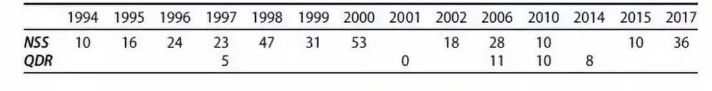 第二个指标是文中提及中国的段落数占文件段落总数的百分比。根据表五，虽然这一比率在有关期间出现了几次起伏，但1994年到1999年和2000年到2010年的平均比率分别为4.2%和4.9%，而2010年后的平均比率为5.9%。表五：美国 N SS 和 Q DR 中带有“中国”的段落占全文比例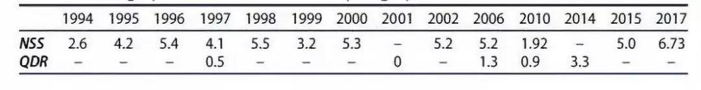
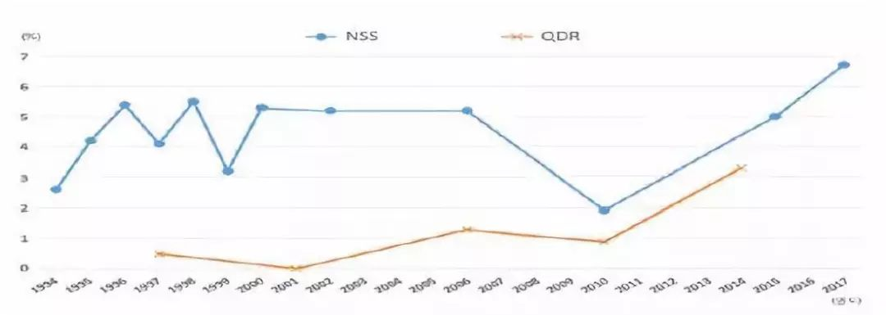
图七：美国 N SS 和 Q DR 中带有“中国”的段落占全文比例 （改编自表五）
但是我们并不能仅从这个数字变化中得出美国自2010年以来更加关注中国的崛起的结论。作者进行了一个小的对比，将文件中提及俄罗斯的段落与段落总数的对比情况做成了图八。通过对图七和图八进行对比可以发现两图在2010年2017年之间的趋势十分相似，但在2017年出现了不同——这说明
在特朗普政府上台后中国似乎比俄罗斯更受到关注。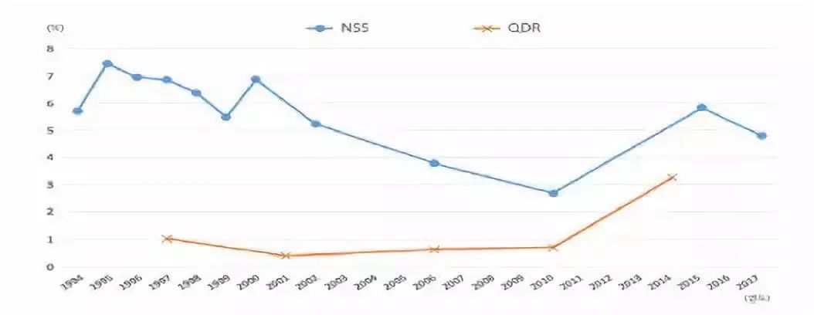
图八：美国 NSS 和 QDR
中带有“俄罗斯”的段落占全文比例
这些文件内容对于解释中国及其崛起有何影响呢？就美国《国家安全战略报告》而言，
在20世纪90年代的大部分时间里，美国官方并没有将中国视为其安全威胁，而是将其视为美国在广泛的地区安全问题上的伙伴。
在这个阶段的早期，美国官方更关注的是中国的政治制度情况、宗教情况、中国参与国际规则和规范的情况以及在核不扩散条约和导弹及其技术控制制度下的规范等。美国官方对中国的看法自进入21世纪以来开始发生转变，其主要原因是中国的强势崛起。美国政府在这些文件中表示，一个开放、和平、稳定、繁荣的中国符合美国的利益，
但自2002年以来中国的军事现代化及其对邻国产生的潜在负面影响引起了美国的担忧和关注。 2017年版 NSS
是特朗普政府的第一版，该文件以更加明确和坦率的方式表达了美国官方对中国的看法，主要有三个突出特点：
第一，华盛顿将中国和俄罗斯放在同一位置并表示二者都试图挑战美国实力并削弱美国的安全；第二，美国将中国视作一个全球玩家并明确表明关注中国在欧洲、西半球和非洲影响力的扩张；第三，华盛顿在深刻反思其过去的对华政策并预示着正酝酿新的方针。这种新的对华方针将权力（而非接触）放在了首要地位。
与 NSS 相比， QDR 对华盛顿的战略关切没有那么模糊， 十分明确地表示要在军事方面对中国保持优势。 2.
中国官方对美国的知觉作者首先对《中国的国防》（ CND
）中“美国”一词出现的频率进行分析。从表六中可以看到四个特征：（1）1998年至2010年之间，除了2000年外“美国”一词出现的平均频次约为15-16次。（2）在2013年和2015年两版中，该频次分别下降至5次和2次。（3）考虑自2010年以来，“中国”一词在美国
NSS
上出现的频次有所下降，不禁让人推测两国行政部门发布的文件是否有意对彼此持有更加谨慎的态度。（4）“美国”一词在2017年的文件中出现了25次，但总体来说这并非中国对美国进行的突然警告，主要是由于该版中设置了专门章节用以讨论中美关系。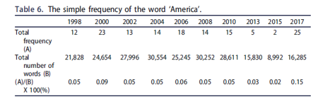
表7展示了含有“美国”这一词的段落在全文段落中的占比，1998年至2008年期间的平均值为6.7%，而2010年至2017年期间的平均值为5.9%。
作者推测造成这种比例下降的原因是，随着中国实力和民族自豪感的增强，中国开始避免与其他国家进行明确的比较。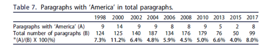
作者对文件中被反复提及的一些事件进行分析后指出，正式和公开发表的文件似乎并没有完全表达出两国的思想状态，这既是出于外交礼仪（diplomatic
courtesy）也是出于战略自尊（strategic self-esteem）。
但是在美国的官方文件中可以清楚地了解到中国正从一个地区问题的参与者不断升级崛起成为一个全球大国，而美国对此与日俱增的战略关切和试图从优势地位对中国加以控制的意愿也可见一斑。另一方面，从中国政府的文件来看，自卑感的迹象（如反复比较国防开支）已基本消失，而实现民族复兴的决心也更加坚定。
三、 知觉的演化与战略的不确定性 ****
作者指出，人们的知觉（perception）通常善变，但通过对中美之间相互知觉的长期评估可以得出几点启示： （1）相比中国对美国的看法，美国无论是国民还是官方对中国的看法都变得更加负面，似乎美国十分担忧自己被中国（ Middle Kingdom ）超越的可能。（ 2）这种负面知觉只会变得更糟，因为华盛顿方面可能会将北京方面的行动和要求理解为中国在充分利用美国的相对衰落。（ 3 ）美国民众对中国的看法正在同美国官方保持一致，与之相反，中国对美国的看法与美国对中国的看法正产生较大的不一致。 缺乏深层的互解和共鸣可能会导致中美两国的相互知觉在未来几年更加糟糕。作者认为，在英美两国进行权力转移时，尽管在20世纪早期两国充满战略猜疑和不信任，但当权力天平不可逆转地偏向华盛顿时，英国是相对乐意将权力交给另一个英语国家的。正如格雷厄姆·艾利森（Graham Allison）所言， 文化共性（共同的历史、民族、宗教、语言等等）是英美权力和平过渡的关键因素——而中美之间明显缺少这些因素。 知觉对外交政策的影响程度仍有待讨论。但在互联网时代大众意见正变得与专家意见同样重要甚至更为重要。 鉴于中美曾经有过由于知觉或错误知觉（misperception）而在朝鲜战争中爆发冲突的历史，在朝核问题和朝鲜导弹问题日益严重的今天，错误知觉可能再次在中美关系中扮演关键角色——因为共识与相互理解只是两国关系的初级阶段。 最后 作者强调了“小事件”（ little things ， 如军队意外遭遇 ， 大国的自负心理等 ）的重要性，并指出小事件也可能对两国关系产生巨大影响。
_ ** _ ** _ ** _ 本文由国政学人独家编译推荐，文章观点不代表本平台观点，转载请联系授权。**__
扫下方二维码查看往期精彩
【联盟战略】为什么亚洲没有北约？集体认同，地区主义和多边主义的起源丨国政学人 第291期
【中英关系】脱欧立场身份与英国对华民意丨国政学人 第293期
【战争研究】暴力的合法性：对海湾战争的批判性分析丨国政学人 第294期match
【冲突研究】代际冲突？青年膨胀与政治暴力 | 国政学人 第295期
【新刊速递】第09期 | International Relations of Asia-Pacific Vol.19,No.3
【新刊速递】第10期 | International Studies Review, Volume.21, No.3, 2019
【新刊速递】第11期 | Cooperation and Conflict, Vol. 54, No. 4, 2019
【新刊速递】第12期 | International Affairs, Vol.95, No.6，2019
分类导览 1
分类导览 2

点“在看”给我一朵小黄花